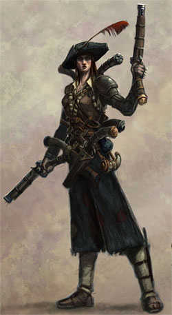
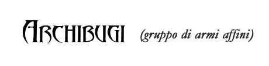
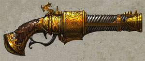

Le armi da sparo
utilizzano laddove compatibili le regole utilizzate durante i combattimenti
dalle armi da tiro.

Gli archibugi sono rudimentali armi da fuoco che usano proiettili di piombo e polvere da sparo.
Archibugio (sottogruppo di armi gemelle)
|
TIPO DI ARMA |
FORZA | COSTITUZIONE | DESTREZZA |
| Archibugio (1.2) | 8 | 8 | 9 |
|
TIPO DI ARMA |
COSTO BASE | DIMENSIONI | INIZIATIVA |
| Archibugio | 70 g.p. | M (4 lbs.) | +5/+11* (+2 se carica) |
| Proiettile | Gittata corta | Gittata media (-2 Thac0) | Gittata lunga (-5 Thac0) |
| Pallottola di Piombo | 30 metri | 60 metri | 90 metri |
* Regole per il
Caricamento delle Armi da Fuoco
Caricare le armi da fuoco è meno stancante che caricare
un'arma da tiro. Per questo motivo chi usa tali armi si affaticherà solo qualora
effettui con il dado dell'iniziativa un tiro naturale pari o superiore a 6.
Caricare un'arma da fuoco può essere, però, un'azione pericolosa.
Ogni round in cui una creatura carica un'arma da fuoco deve effettuare una prova
di destrezza. Se la prova riesce costui utilizzerà il primo modificatore al
fattore iniziativa (quello più basso) altrimenti dovrà utilizzare il secondo
modificatore al fattore iniziativa (ossia quello più lento). Se il risultato
della prova è un successo critico (1 naturale) avrà
un modificatore al fattore iniziativa pari a quello previsto per l'arma carica.
Se, invece, il risultato della prova è un fallimento
critico (20 naturale) si sarà verificata un'esplosione accidentale in
fase di caricamento (ad un fattore iniziativa pari a quello dell'arma carica).
In tale ultimo caso l'arma dovrà superare un tiro salvezza contro rottura pari
ad 8, inoltre, chi caricava l'arma subirà 1d3 danni da fuoco e perderà
interamente il round.
| Proiettile | Danno a Gittata Corta | Danno a Gittata Media (-2 Thac0) | Danno a Gittata Lunga (-5 Thac0) |
| Pallottola di Piombo | 1d10* (perforazione) | 1d8* (perforazione) | 1d6* (perforazione) |
| Proiettile | Comuni | Buone | Eccellenti | Superbe |
| Pallottola di Piombo | 0.1 g.p. | 0.4 g.p. | 0.8 g.p. | 1.5 g.p. |
Le pallottole di piombo pesano 1/10 di libbra l'uno e possono essere portate in una qualsiasi sacchetta. Per sparare con un'arma da fuoco oltre ad ogni pallottola occorre caricare la polvere da sparo. La polvere viene portata in un corno da 20 dosi dal peso di 2 lbs. (1/10 di libbra a dose) e dal costo pari ad 20 monete d'oro (1 moneta d'oro a dose). Si noti che, una volta sparate, le pallottole di delle armi da fuoco sono definitivamente distrutte.
* Regole per la
Penetrazione Profonda delle Armi da Fuoco
Le pallottole sparate dalle armi da fuoco, qualora il
bersaglio sia centrato particolarmente bene, possono penetrare a fondo nel corpo
del nemico e provocare maggiore danno. Per tale motivo, quando chi utilizza
un'arma da fuoco colpisce il proprio bersaglio effettuando un tiro in grado di
superare la Classe Armatura di quest'ultimo di 5 o + punti
il colpo sarà penetrato a fondo ed il bersaglio subirà un danno supplementare
pari al danno previsto per i colpi andati a segno alla Gittata Lunga.
Pistola a Pietra Focaia (sottogruppo di armi gemelle)

|
TIPO DI ARMA |
FORZA | COSTITUZIONE | DESTREZZA |
| Pistola a Pietra Focaia (1.35) | 7 | 7 | 10 |
|
TIPO DI ARMA |
COSTO BASE | DIMENSIONI | INIZIATIVA |
| Pistola a Pietra Focaia | 125 g.p. | S (1 lbs.) | +3/+7* (+1 se carica) |
| Proiettile | Gittata corta | Gittata media (-2 Thac0) | Gittata lunga (-5 Thac0) |
| Pallottola di Piombo | 18 metri | 36 metri | 54 metri |
* Regole per il
Caricamento delle Armi da Fuoco
Caricare le armi da fuoco è meno stancante che caricare
un'arma da tiro. Per questo motivo chi usa tali armi si affaticherà solo qualora
effettui con il dado dell'iniziativa un tiro naturale pari o superiore a 7.
Caricare un'arma da fuoco può essere, però, un'azione pericolosa.
Ogni round in cui una creatura carica un'arma da fuoco deve effettuare una prova
di destrezza. Se la prova riesce costui utilizzerà il primo modificatore al
fattore iniziativa (quello più basso) altrimenti dovrà utilizzare il secondo
modificatore al fattore iniziativa (ossia quello più lento). Se il risultato
della prova è un successo critico (1 naturale) avrà
un modificatore al fattore iniziativa pari a quello previsto per l'arma carica.
Se, invece, il risultato della prova è un fallimento
critico (20 naturale) si sarà verificata un'esplosione accidentale in
fase di caricamento (ad un fattore iniziativa pari a quello dell'arma carica).
In tale ultimo caso l'arma dovrà superare un tiro salvezza contro rottura pari
ad 9, inoltre, chi caricava l'arma subirà 1d2 danni da fuoco e perderà
interamente il round.
| Proiettile | Danno a Gittata Corta | Danno a Gittata Media (-2 Thac0) | Danno a Gittata Lunga (-5 Thac0) |
| Pallottola di Piombo | 1d8* (perforazione) | 1d6* (perforazione) | 1d4* (perforazione) |
| Proiettile | Comuni | Buone | Eccellenti | Superbe |
| Pallottola di Piombo | 0.1 g.p. | 0.4 g.p. | 0.8 g.p. | 1.5 g.p. |
Le pallottole di piombo pesano 1/10 di libbra l'uno e possono essere portate in una qualsiasi sacchetta. Per sparare con un'arma da fuoco oltre ad ogni pallottola occorre caricare la polvere da sparo. La polvere viene portata in un corno da 20 dosi dal peso di 2 lbs. (1/10 di libbra a dose) e dal costo pari ad 20 monete d'oro (1 moneta d'oro a dose). Si noti che, una volta sparate, le pallottole di delle armi da fuoco sono definitivamente distrutte.
* Regole per la
Penetrazione Profonda delle Armi da Fuoco
Le pallottole sparate dalle armi da fuoco, qualora il
bersaglio sia centrato particolarmente bene, possono penetrare a fondo nel corpo
del nemico e provocare maggiore danno. Per tale motivo, quando chi utilizza
un'arma da fuoco colpisce il proprio bersaglio effettuando un tiro in grado di
superare la Classe Armatura di quest'ultimo di 5 o + punti
il colpo sarà penetrato a fondo ed il bersaglio subirà un danno supplementare
pari al danno previsto per i colpi andati a segno alla Gittata Lunga.
Tecniche di combattimento specifiche per gli archibugi
Le manovre di combattimento possono essere cumulate con i vari colpi di combattimento.
Tenere un bersaglio sotto mira (Abilità minima: Esperto)
Qualora un personaggio
abbia già caricato un colpo nell'archibugio costui potrà tenere sotto mira (non costa
alcuna
fatica) un bersaglio per uno o più rounds. Se decide di sparare al bersaglio a
cui mirava ottiene un bonus di +1 al tiro per colpire per ogni round impiegato
unicamente a
mirare fino ad un massimo che dipende dalla sua bravura:
Archibugiere esperto: bonus massimo di +1 al tiro per colpire.
Archibugiere campione: bonus massimo di +2 al tiro per colpire.
Archibugiere maestro: bonus massimo di +3 al tiro per colpire.
Per fare un esempio, quindi, un archibugiere esperto nonostante tenga sotto mira un bersaglio per diversi round non otterrà un bonus maggiore di +1 mentre un archibugiere campione a partire dal secondo round di mira otterrà +2 al tiro (+1 se, invece, aveva mirato per un solo round).